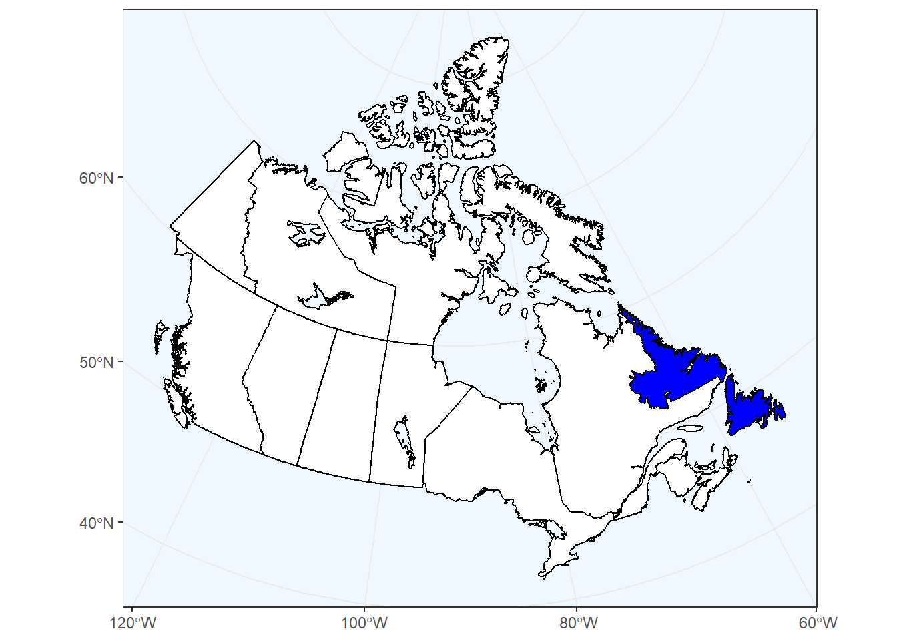

Making maps for conservation - GIF and interactive maps
2022-04-07
Chapter 1 - Data for this manual
In this manual, we are going to use two types of open access datasets.
Shapefiles from Natural earth (https://www.naturalearthdata.com/) which is a public domain map dataset available at different scales with a lot of free vector and raster. The R package to hold and facilitate interaction with Natural Earth map data is
rnaturalearth.- Data from Global Biodiversity Information Facility (https://www.gbif.org/fr/). Here we are going to use the eBird dataset (https://www.gbif.org/fr/dataset/4fa7b334-ce0d-4e88-aaae-2e0c138d049e). Managed by the Cornell Lab of Ornithology eBird’s goal is to increase data quantity through participant recruitment and engagement globally, but also to quantify and control for data quality issues such as observer variability, imperfect detection of species, and both spatial and temporal bias in data collection.
Here we are going to use data extracted from eBird Canada survey between 2011 and 2021. And we will only data from 10 breeding bird species in Newfoundland.
1.2 Load the dataset
#- Import background basemap
Use ne_states to get provincial/territorial borders from rnaturalearth package
ggplot() +
geom_sf(data = canada_map, colour = "black",
fill = ifelse(canada_map$name == "Newfoundland and Labrador",
'blue', 'white')) +
coord_sf(crs = "+proj=lcc +lat_1=49 +lat_2=77 +lon_0=-91.52 +x_0=0 +y_0=0
+datum=NAD83 +units=m +no_defs") +
scale_x_continuous(breaks = c(-120, -100, -80, -60)) +
theme_bw() +
theme(panel.background = element_rect(fill = "aliceblue"))